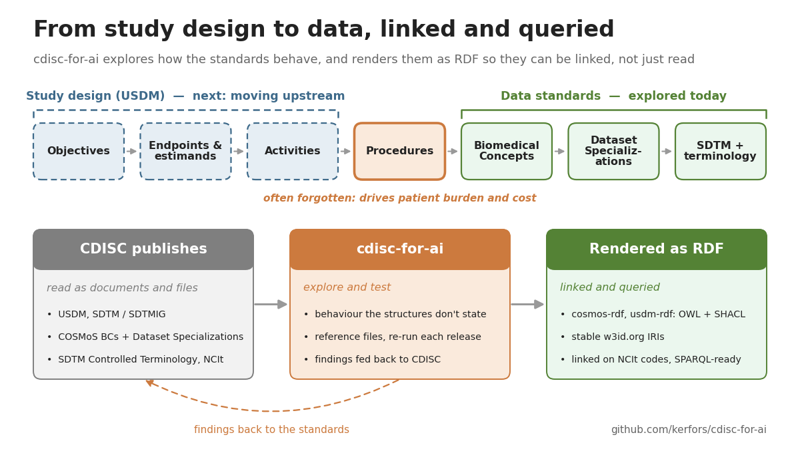

Explorative work on the CDISC clinical data standards, using linked data principles: understanding the behaviour of the standards, the patterns their data structures say nothing about.

Machine-actionable reference files built from CDISC SDTM Controlled Terminology, NCIt, and COSMoS Biomedical Concepts and Dataset Specializations, designed for both human review and AI consumption. The analyses behind them measure how the standards actually behave. This is the test bed. Ideas are explored here first. The long-run aim is to publish the reference files as RDF/OWL that can express that underlying behaviour, related to established ontologies, so the standards can take part in the picture above: from study design to data, linked and queried.
Reference versions: SDTM CT 2026-09-25 (NCI EVS), COSMoS BC/DSS 2026-07-14, SDTMIG v3.4. Latest release note: Changes_2026-10.md.
Source repository: github.com/kerfors/cdisc-for-ai. Each Excel file is self-describing, with a README sheet documenting columns, provenance, and design decisions. How the files are built from each other: Data_Flow.md.
The deliverables: test identity from SDTM CT + NCIt, and the sub-typed Findings consumer files fed from the graph.
SDTM_Test_Identity.xlsx
domain-level TESTCDs with NCIt identity
SDTM_Instrument_Test_Identity.xlsx
test codes bound to an instrument codelist
SDTM_Instrument_Identity.xlsx
one row per instrument codelist, dual NCIt anchors (C20993 + C211913)
Specimen_Findings.xlsx
specimen-based Findings consumer view (LB, MB, MI, CP, BS, MS, PC, PP)
Measurement_Findings.xlsx
measurement-based Findings consumer view (VS, EG, MK, CV, RE)
Instrument_Findings.xlsx
instrument-based Findings consumer view (QS, FT, RS); four sheets: Test_Identity, Measurement_Specs, BC_Categories, BC_Parents
SDTM_Domain_Metadata.xlsx
shared domain metadata: observation class and consumer classification (specimen, measurement, instrument); the scope source for the Findings consumers
cosmos-graph projects COSMoS into a multi-sheet traversable graph; consumer-bases joins the graph into views that the consumer files read.
COSMoS_Graph.xlsx
COSMoS as a graph: BC, BC_Parents, BC_Categories, DSS, Variables, Codelists, Relationships, Coding, DataElementConcepts
COSMoS_Graph_CT.xlsx
the graph resolved against SDTM CT
Codelist_Coverage.xlsx
codelist-forward: which codelists the DSSs use, and in which domains
DSS_View.xlsx
wide, one row per DSS
DSS_Variables_View.xlsx
long, one row per value-level metadata row
PR_DSS_Reachability.xlsx
procedure-forward: which Findings DSSs a PR procedure reaches (early work)
Release notes: 2026-10 (corrections at SDTM CT 2026-09-25) · 2026-09 (SDTM CT 2026-09-25) · 2026-08 (COSMoS 2026-07-14) · 2026-06 (COSMoS 2026-05-26) · 2026-05 (legacy sdtm-findings/ consumer and pre-graph COSMoS flatten retired). Earlier versions remain in git history.